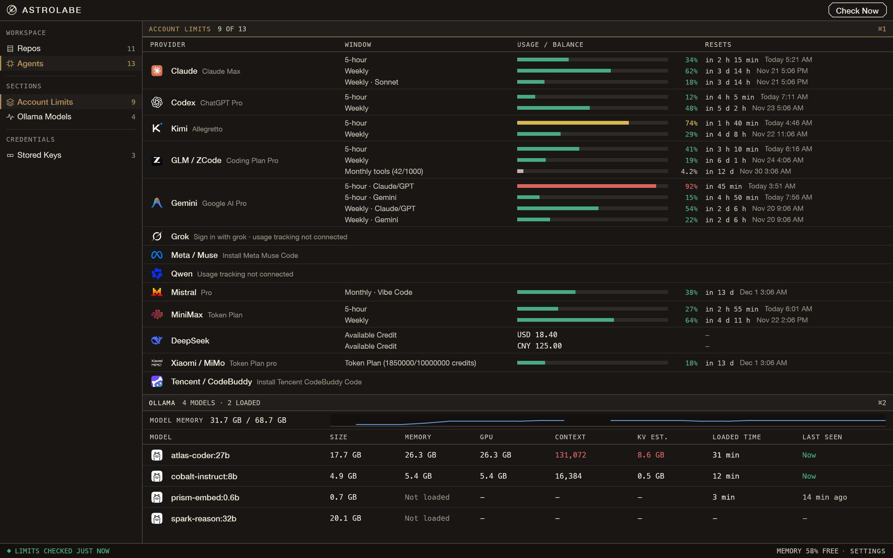
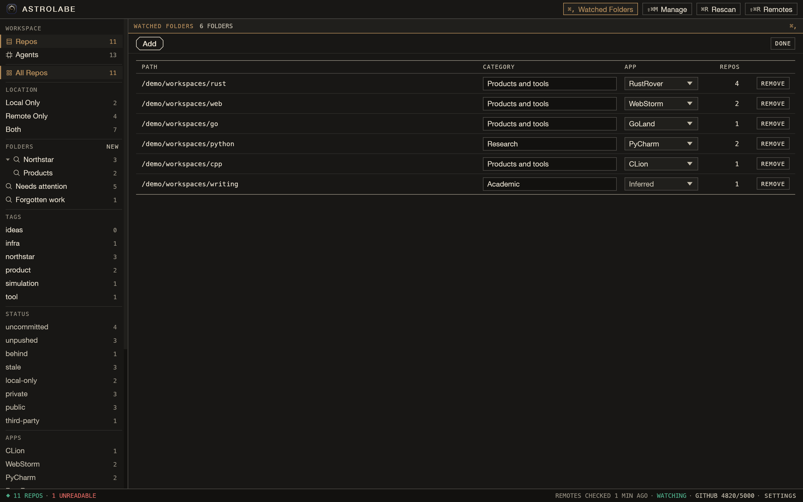
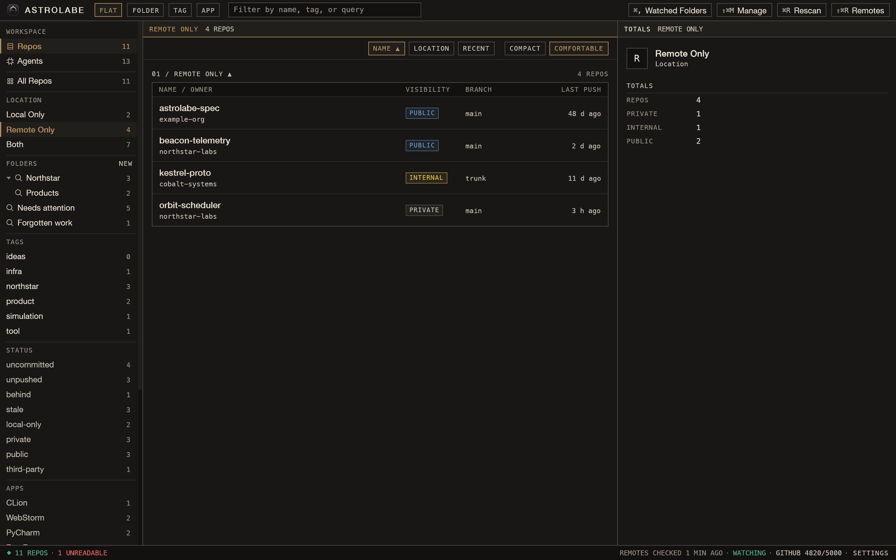

Astrolabe is a desktop application for repository inspection and agent supervision on macOS. The application combines local Git views, GitHub repository status, provider quotas, and local Ollama telemetry in one window.
The Repos panel inspects Git repositories across watched folders and shows status flags for uncommitted changes, unpushed commits, and remote updates. The command bar groups rows by folder, tag, or IDE and filters repositories with Boolean queries. The inspector pane shows branch state, commit counts, stashes, worktrees, and launch buttons for the assigned IDE, Finder, Terminal, and GitHub.
02 · Agents
Agents

The Agents panel monitors quota windows and credit balances across 13 providers and shows local Ollama models in a lower pane. The Account Limits pane shows usage bars, currency balances, and reset countdowns while background probes use zero model tokens. The Ollama pane shows resident memory, GPU footprint, context length, and KV cache estimates next to a 10-minute memory sparkline.
03 · Watched Folders
Watched Folders

The Watched Folders view lists and updates the root directories that the Repos panel scans for Git repositories. Each row shows the path, category, app, and repository count, with inline controls for category, app, and removal. The Add button opens a native folder picker. Astrolabe then checks each path, saves the configuration file, and scans the folders again.
04 · Repository Location
Repository Location

The Location sidebar group sorts repositories into Local Only, Remote Only, and Both with live counts for each group. Astrolabe matches local clones against the GitHub account by remote URL to identify repositories in each location. Remote Only rows show name, owner, visibility, default branch, and last push time for observation without local columns or write actions.